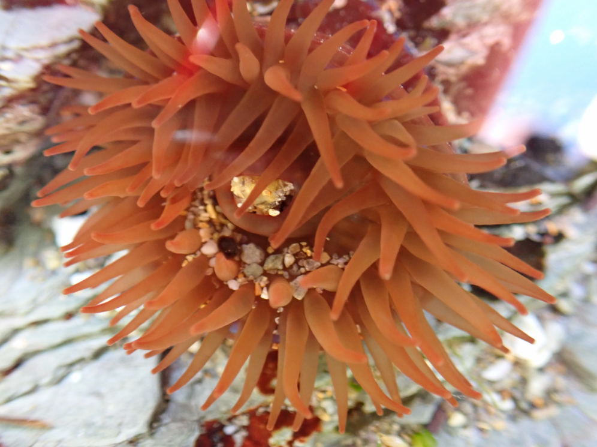
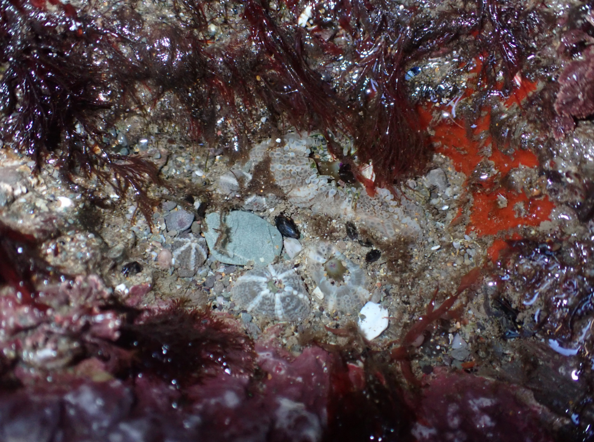

Biology


Homepage (✓)
Hobbies
├─ Microscopy (✓)
├─ Photography (✓)
├─ Geology (×)
└─ Biology (✓)
Engineering
├─ My Course (×)
├─ Resources (✓)
└─ Personal Projects
├─ RC Systems
│ ├─ Slipper (×)
│ ├─ MK I (×)
│ ├─ MK II (×)
│ └─ MK III (×)
├─ 3D printer (×)
└─ Rocket Analysis (✓)
This Website (×)
Changelog (✓)
Contact Me (✓)
My Interest
My intrest in biology has been with me pretty much forever. Be it bugs, lichen, trees, crabs or mammals, I have a special interest. Following in this, I did biology as one of my A-Levels and was my best subject. I got a microscope, used my camera to photograph the wildlife and read species-identifying books. In particular I have a special intrest in the Cnidarian phylum. This is a phylum containing Jellyfish, Corals and (my above all favorite) Sea Anenomes. Below is a small curated selection of some of my best finds.
Beadlet Anenome

Beadlet Anenome
Strawberry Anenome
Strawberry Anenome
A Colony of Snakelocks Anenomes
Snakelocks Anenome
Dahlia Anenome
Unknown Anenome: Found off the south spanish coast

A colony of Gem Anenomes
A cove of Gem Anenomes
A bush of white flowers
A Dandilion
The Close up of the Dandilion
Gorse
A Succulent
A Bird
A Goose, caring for her eggs
A duck sitting in the shade... giving me an odd look
A Catapillar with a furry yet effective defense
Red Algae
A Mauve Stinger, Spain
Spanish Ants
A Young Mauve Stinger
A Spanish Fish
A Close-up of a Red Urchin

Barnacle Cluster